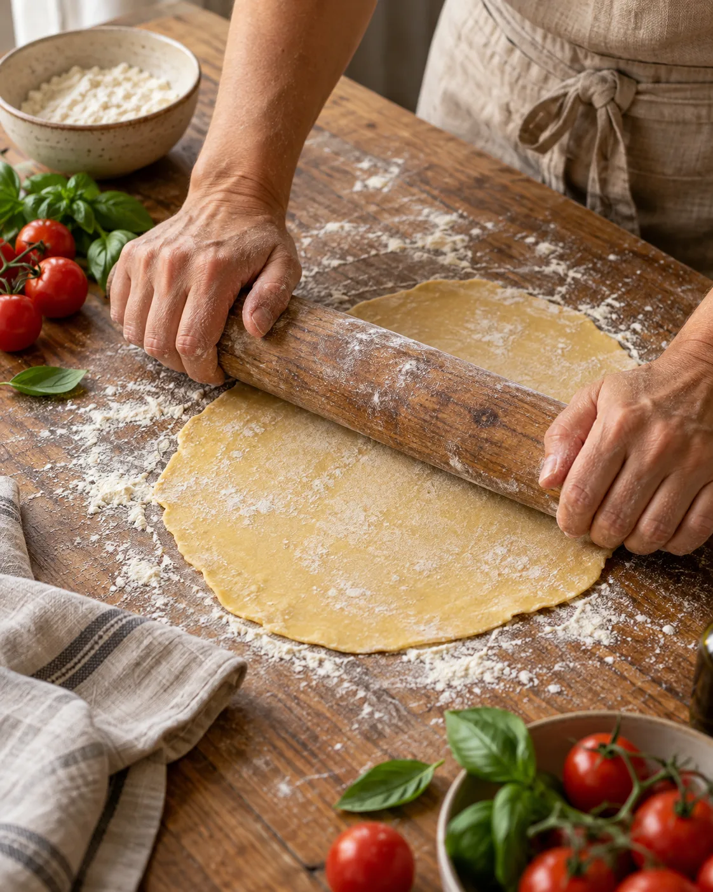

Comece do começo
Da segurança na cozinha às primeiras massas e sobremesas. Cada aula faz parte desse caminho.
Escola de culinária presencial
A primeira receita. Uma nova habilidade. Um momento em família. Aprenda a cozinhar do zero, com as mãos na massa e no seu ritmo.
Para jovens a partir de 13 anos, adultos e crianças de 6 a 12 anos acompanhadas.

Não precisa ter experiência
Ingredientes e avental inclusos
Aprendizado em pequenos grupos
O ateliê
Aqui, o básico tem valor. Você aprende técnicas que cabem no dia a dia, entende os ingredientes e ganha confiança para preparar sua próxima refeição.
Da segurança na cozinha às primeiras massas e sobremesas. Cada aula faz parte desse caminho.
Aulas presenciais, ingredientes à mão e orientação para experimentar as técnicas na prática.
No Kids, criança e responsável cozinham juntos. Uma dupla, novas receitas e tempo de qualidade.
Quem ensina
15 anos de experiência em cozinha profissional para acompanhar seus primeiros passos.
Uma base bem aprendida faz diferença em toda receita.
Instrutora fictícia deste projeto.Cursos
Dois jeitos de começar.
O mesmo prazer de fazer com as próprias mãos.
A base para cozinhar com mais confiança e transformar ingredientes em comida de verdade.
Ingredientes e avental inclusos
R$ 480 à vista
ou 4× de R$ 130 no cartão (total de R$ 520)
Pequenos cozinheiros, grandes descobertas. Uma experiência para criança e responsável viverem juntos.
Ingredientes e aventais da dupla inclusos
R$ 560 por dupla, à vista
ou 4× de R$ 150 no cartão (total de R$ 600)
No Kids, o responsável também cozinha. No Essencial, participantes de 13 a 17 anos precisam informar os dados de um responsável na pré-inscrição.
Turmas
Encontre a turma que cabe na sua rotina.
Confira o início antes de fazer a pré-inscrição.
As turmas de sábado e Kids começam em fevereiro, abril, junho, agosto e outubro. As turmas da manhã e da noite começam todos os meses. Datas exibidas conforme o calendário de São Paulo.
Certificado de conclusãoPara os dois cursos, com pelo menos 75% de presença.
Reembolso integralAté 7 dias antes do início do curso.
O próximo passo é seu
Escolha o curso e o horário que combinam com você. Depois, confira os participantes e revise tudo com calma.
Você pode experimentar a pré-inscrição com dados fictícios. Nada é enviado ou armazenado, nenhuma vaga é reservada e não haverá cobrança ou contato.
Você percorreu todas as etapas. Nenhum dado foi enviado ou armazenado, nenhuma vaga foi reservada e não haverá cobrança ou contato.
Em uma inscrição real, seria necessário confirmar a disponibilidade e combinar o pagamento com a escola. Neste projeto fictício, não há outra etapa a realizar.
Regra apresentada pelo curso: reembolso integral até 7 dias antes do início.
Dúvidas
As respostas para você escolher seu curso com tranquilidade.
Ver informações de contatoNão. O Culinária Essencial começa do básico e não exige experiência. É aberto a pessoas a partir de 13 anos, sem limite máximo de idade. No Kids, crianças de 6 a 12 anos participam com um responsável.
Cada inscrição é para uma dupla: uma criança de 6 a 12 anos e um responsável, que permanece e também cozinha durante a aula. O valor de R$ 560 à vista ou 4× de R$ 150 no cartão é pela dupla. Ingredientes e os dois aventais estão inclusos.
As 8 aulas presenciais, os ingredientes e o avental. No Kids, estão inclusos os aventais da criança e do responsável. Os dois cursos oferecem certificado de conclusão com pelo menos 75% de presença.
Sim. O formulário tem um campo opcional para isso. Em uma inscrição real, essas informações precisariam ser avaliadas pela escola antes de confirmar a participação; não há garantia de ambiente livre de alérgenos. Neste projeto demonstrativo, use apenas informações fictícias.
O reembolso é integral até 7 dias antes do início do curso. A pré-inscrição desta página é uma simulação e não realiza cobrança nem reserva uma vaga.
Esta página é um projeto acadêmico para uma escola fictícia. Você pode experimentar o formulário e revisar as escolhas, mas nenhum dado é enviado ou armazenado, nenhuma vaga é reservada e nenhum pagamento é solicitado.